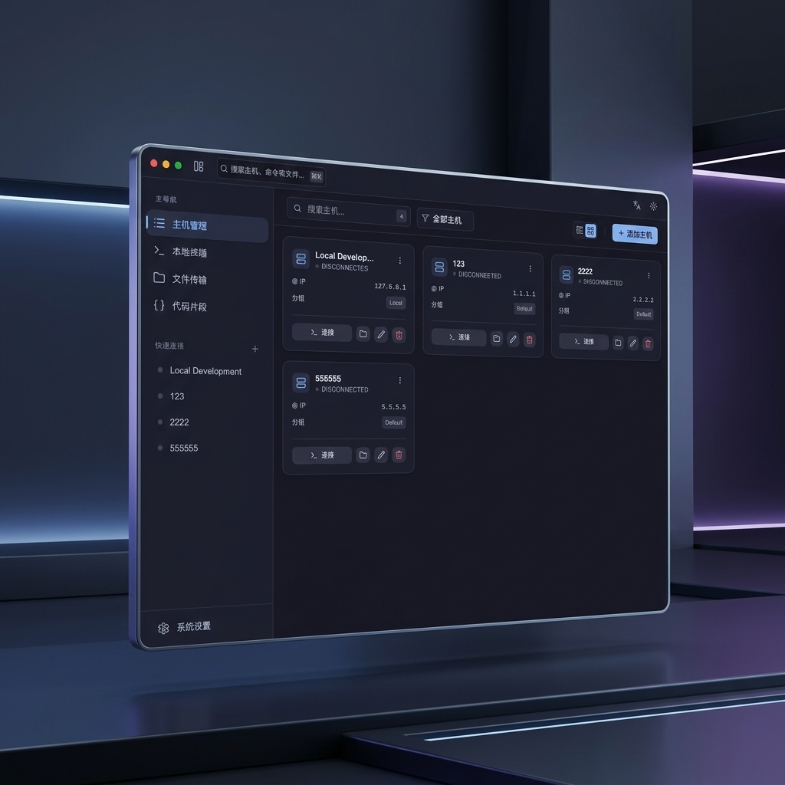

Early Access Available
Native Speed.
Native Speed.
Cloud Power.
The modern SSH & SFTP workstation for engineers who demand elegance without sacrificing performance. Built with Rust.
Supports macOS, Windows, and Linux

Everything Built-in
A workstation, not just a terminal.
Axon combines a world-class terminal with professional file management, security, and monitoring.
Terminal Experience
- Multi-pane sessionsSplit horizontally or vertically, work across servers simultaneously.
- Broadcast modeSend a single command to all open panes at once.
- GPU-acceleratedSmooth 60fps via xterm.js WebGL.
- Auto-reconnectAutomatically restores SSH sessions after network drops.
SFTP File Manager
- Dual-pane browserNavigate local and remote filesystems side by side.
- Drag & dropUpload and download files with visual progress.
- Transfer queueBatch operations with real-time status tracking.
Uncompromising Security
- End-to-end encryptionAll sensitive data protected with XChaCha20-Poly1305.
- Key derivationArgon2id password hashing.
- Flexible storageOS Keychain or local encrypted file.
- No telemetryZero data collection, everything stays local.
Cloud Sync
- GitHub Gist backupEncrypted host configs synced via private Gists.
- Device Flow authSecure OAuth without exposing client secrets.
Monitoring
- Live metricsReal-time CPU, memory, disk, and network stats.
- Shell historyImport and browse remote command history.
Interface
- Global searchCmd+K command palette for hosts, snippets, and files.
- Snippet managerSave, organize, and quickly execute common commands.
Architecture
Native performance,
Native performance,
zero Electron.
Axon is built with Tauri v2 and Rust. It consumes 90% less memory than Electron-based terminals while delivering smoother 60fps rendering via xterm.js WebGL.
< 40MB
Idle Memory Usage
60 FPS
Hardware Acceleration
macOS: ~3.9MB
Windows: ~4.5MB
Linux: ~2.5MB